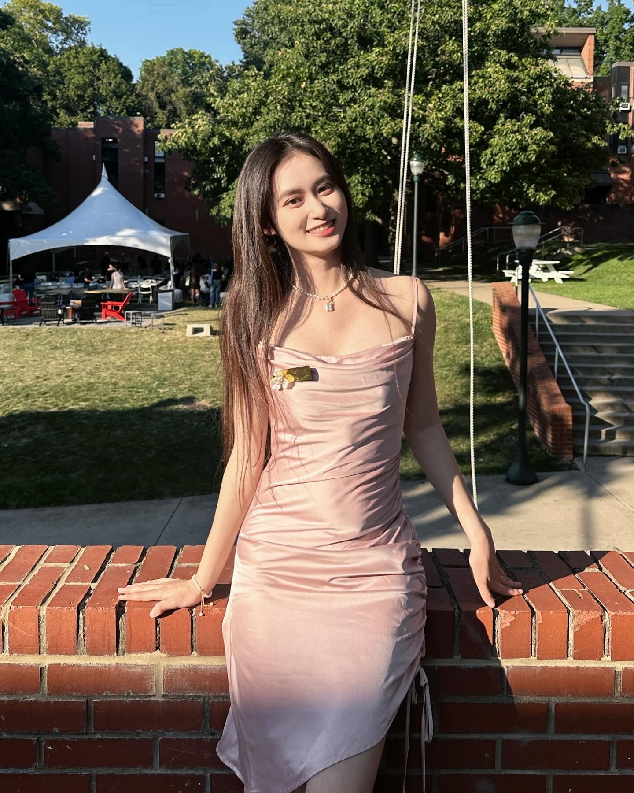

Hi, my name is Sofia
I'm passionate about leveraging technology for societal impact, with solid programming skills in C, Python, Java, and React, and a strong background in problem-solving. Currently, I'm a student at Carnegie Mellon University, majoring in Information Systems and Artificial Intelligence. I contribute to developing Chrome and Thunderbird extensions and debugging code as a Research Assistant, and I also worked on AI-driven projects in gaming and virtual machine implementation. Additionally, I'm about to start a Teaching Assistant role for an HCI course at the Carnegie Mellon School of Computer Science. Outside of work and academics, I'm a bubble tea enthusiast. I enjoy experimenting with recipes and collaborating with friends to perfect the taste.